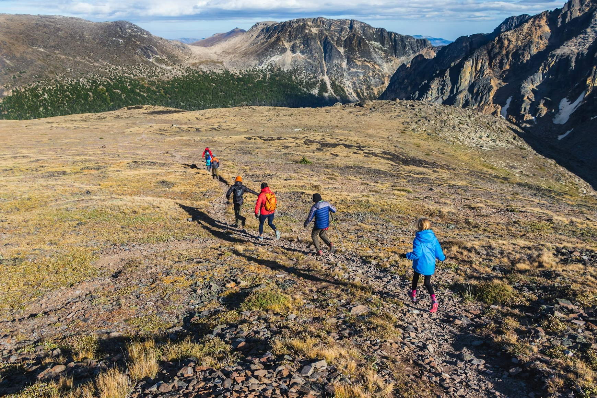

The Community Driven Athletic Event
Of The Year
- Run with your friends in a team relay race from San Francisco to somewhere far, far away,
- This is organized by a group of local runners trying to have a good time,
- So have fun, stay hydrated, work together, and try not to get too lost ✌️

About
What is this?
Bay To Lake is a self organized long distance
relay race.
This is not an official athletic event. There are no
road closures, chip timers, or route markings.
You are responsible for your own safety and the safety
of other participants.
How do I participate?
You can sign up as part of a team, or individually and
we will try to place you on a team.
Team size is 6-8 athletes with 2 optional support
drivers.
The cost to participate is around $45-$65 per person.